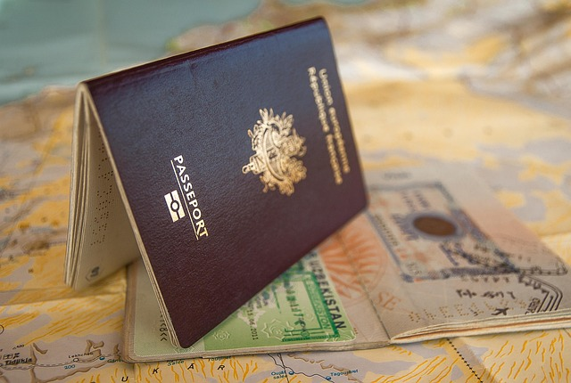
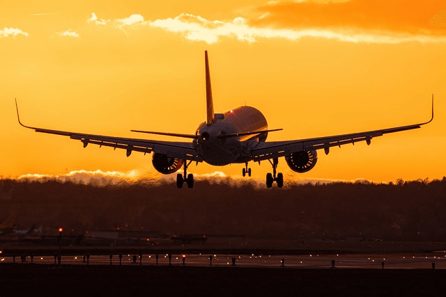

1. Choose your destination
It’s easy to say, “I’m going to travel,” but it’s important to make a clear decision about where you want to go. A definite destination gives you direction, helps you stay motivated, and makes planning each step toward your trip much easier.
For my first trip, I knew the general destination but hadn’t decided exactly how long I’d stay in each place. I booked my transport in advance but left accommodation for later, which meant arriving late in unfamiliar cities searching for a room. Even traveling with my boyfriend, it was stressful — and alone, it would have been much harder
This taught me that planning your destination clearly and having at least some accommodation booked in advance makes your journey smoother and more enjoyable.
IF you still need help with ideas where to go and how to keep inspired, visit Ignite the Wanderlust.
2. Decide how long you'll stay
Once you’ve decided on your destination, the next big question is how long you’ll stay. Knowing how long you plan to travel is very important to book effectively.The length of your trip will determine everything else — from how much money you need to save, to how detailed your itinerary should be.
Think about your trip. Is it a short break, or a longer journey to fully immerse yourself in the culture? Be realistic with your time off work, budget, and personal commitments. It’s often better to plan fewer places and spend more time in each, rather than rushing from one destination to another without really experiencing it, which is also a mistake I have once done. Throughout my travels I have learned that sometimes quality is better than quatity.
3.Check your passport validity

Before you book anything, make sure you check your passport’s expiry date.. Many countries require at least six months of validity beyond your planned return date, so don’t risk being turned away at the airport.
Recently there was number of occassions that people had their holiday ruined just because they did not pay attention to their passport validity and realised that their passport is out of date or close to expiration and you don't want to be one of them. If your passport is close to expiring, apply for a renewal well in advance as the process can take longer than expected.
4. Review travel requirements
Before you travel, always check the entry requirements for your destination to avoid any unwanted surprises. Rules can change quickly, and being unprepared could mean delays or even being turned away at the border.
I learned this the hard way during the pandemic. On one trip home, just before landing in Frankfurt, we were told we’d have to stay at the airport until Covid tests were completed. Spending the night on the benches of the terminal wasn’t exactly how I pictured starting my Christmas holiday. Since then, I always double-check requirements — and it’s a habit worth keeping, even now that restrictions are lighter.
5. Plan your budget
Once your passport and travel requirements are sorted, the next step is to plan your budget. Think about the main costs: flights, accommodation, food, transport, and activities. Add a little extra for unexpected expenses so you’re not caught off guard.
Setting yourself a budget gives your trip peace of mind and helps you enjoy your journey better without worrying about running out of money half way through your trip. If you need some tips on saving for your holiday, you can visit my page Ways to save for travel.
6. Get travel insurance
Many people see travel insurance as an unnecessary expense, especially if they’re young, healthy, and have no medical issues. But the truth is, travel insurance is one of the most important things you can have to keep yourself safe on your travels. Don’t risk traveling without it — you could regret it later. At home, you can simply go to your local doctor or hospital free of charge, but abroad, even a small accident or illness can leave you with bills more expensive than the trip itself.
I once traveled without insurance and fell ill. Luckily, I managed with the medication I had with me and didn’t need a doctor or hospital. But I would never take that chance again — luck doesn’t always strike twice.
If you not sure what travel insurance is the best, you can check on number of comparison sites such as:
MoneySupermarket.com
Gocompare.com
7. Book your flights

Booking your flight can be the most stressful part of the planning as it work on our emotional state of being seeing sometimes the big price tag on flights, if you go further than just cheap Europe break, so booking wisely makes a real difference.
The best way is to check with number of search engines, be flexible on the dates and once you checked the search engines book directly with the airline as it will save you some stress over any possible issues later on as when book direct with an airline, they usually provide better customer support than any third parties and airlines will normally send you back to the third party you booked with, which could prove sometimes challenging.
planning ahead is very practical for most destinations and little research can save you lot of funds you can put toward your accommodation or activities. For more tips on booking a flight visit my page Ways to get a cheap flights.
8. Arrange your accommodation
Finding the right place to stay is also important for your best travel experience. Start by deciding what are your priorities: comfort, location, price, or atmosphere. Hostels, hotels, guesthouses, and short-term rentals all offer something different, so think about which option fits you the best.
Booking early usually gives you more choice and better prices and most of the time many platforms let you reserve with free cancellation, which helps if your plans aren’t fully set. Even if you like to keep your plans open, having at least your first night secured gives you peace of mind and more energy to explore.
For more
on accomodation visitWays to get cheap accommodation.
Plan activities and things to See
Once you know where you are going, then think about what you want to do there - visit museums, hiking, sigtseeing, food, cultural event, nightlife - you name it. Do your homework and research the place to find what do you want to see and do, then make a list. You can even divide the list into must sees, maybes and if time allows. Having at least a rough plan of activities helps you make the most of your time, especially if you have only a limited number of days.
You don’t have to plan every hour of every day, but knowing your priorities means you won’t miss out on what really matters to you. Planning a trip is not about having set times of each activity - that leave for travel agencies unless set times and schedules are important to you.
When I travel I always want to have a unique experience, different to everyone else who travel on organised tours. I am not fan of them, they are good if you need to know about some places and how to get there, but when I know enough, I do it my way - check transport and what I can do there on top of the must sees. When I traveled through South America, I made list of few things I want to see but also had a room for spontaneity. That balance gave me direction while still allowing me to explore my way — and those unplanned moments often turned out to be the best memories. Check more about how I did my research of activities on page Make the most of it.